pacman::p_load(sf, tmap, tidyverse)Hands-On Exercise 2 : Thematic Mapping and GeoVisualisation with R
Hello! In this page, i will be describing how i performed Thematic Mapping and GeoVisualisation with R. I will mainly be trying to create a choropleth map using the tmap package!
We also use pivot_wider() of the tidyr package, and mutate() ,group_by() , select() and filter() of the dplyr package, which i will be explaining in detail.
I hope you can follow along, and be able to create choropleth maps!
What are choropleth maps?
Choropleth maps allows you to show the variation of data across a geographic region through the use of color. As the data varies across the geographic region, the intensity/shade of the color varies.
Let me show you an example:
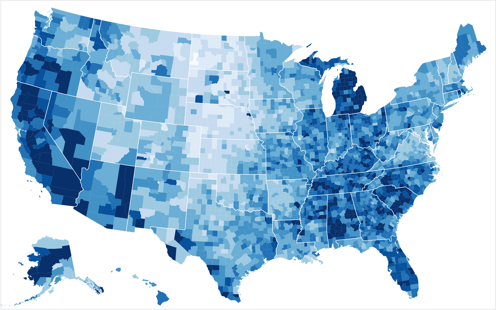
Loading packages
This is a very important step as we have to load the packages before we can use them.
What is the tmap package?
The tmap package provides you with many handy functions to create your own thematic maps like choropleth maps.
Importing the data
Downloading the data
The links of the data i used are here (download shp format) and here
Importing Geospatial Data into R
As learnt in the previous page, we use st_read() function of the sf package to read in the data.
mpsz <- st_read(dsn = "data/geospatial",
layer = "MP14_SUBZONE_WEB_PL")Reading layer `MP14_SUBZONE_WEB_PL' from data source
`C:\shaysnutss\IS1455-GAA\Hands-on_Ex\Hands-on_Ex02\data\geospatial'
using driver `ESRI Shapefile'
Simple feature collection with 323 features and 15 fields
Geometry type: MULTIPOLYGON
Dimension: XY
Bounding box: xmin: 2667.538 ymin: 15748.72 xmax: 56396.44 ymax: 50256.33
Projected CRS: SVY21When we realtiple features (geographical entities), with 15 fields, or attributes (such as temperature, precipitation for example).
Let us examine it further by just printing mpsz (the variable we have stored the data in, that is of sf data object).
mpszSimple feature collection with 323 features and 15 fields
Geometry type: MULTIPOLYGON
Dimension: XY
Bounding box: xmin: 2667.538 ymin: 15748.72 xmax: 56396.44 ymax: 50256.33
Projected CRS: SVY21
First 10 features:
OBJECTID SUBZONE_NO SUBZONE_N SUBZONE_C CA_IND PLN_AREA_N
1 1 1 MARINA SOUTH MSSZ01 Y MARINA SOUTH
2 2 1 PEARL'S HILL OTSZ01 Y OUTRAM
3 3 3 BOAT QUAY SRSZ03 Y SINGAPORE RIVER
4 4 8 HENDERSON HILL BMSZ08 N BUKIT MERAH
5 5 3 REDHILL BMSZ03 N BUKIT MERAH
6 6 7 ALEXANDRA HILL BMSZ07 N BUKIT MERAH
7 7 9 BUKIT HO SWEE BMSZ09 N BUKIT MERAH
8 8 2 CLARKE QUAY SRSZ02 Y SINGAPORE RIVER
9 9 13 PASIR PANJANG 1 QTSZ13 N QUEENSTOWN
10 10 7 QUEENSWAY QTSZ07 N QUEENSTOWN
PLN_AREA_C REGION_N REGION_C INC_CRC FMEL_UPD_D X_ADDR
1 MS CENTRAL REGION CR 5ED7EB253F99252E 2014-12-05 31595.84
2 OT CENTRAL REGION CR 8C7149B9EB32EEFC 2014-12-05 28679.06
3 SR CENTRAL REGION CR C35FEFF02B13E0E5 2014-12-05 29654.96
4 BM CENTRAL REGION CR 3775D82C5DDBEFBD 2014-12-05 26782.83
5 BM CENTRAL REGION CR 85D9ABEF0A40678F 2014-12-05 26201.96
6 BM CENTRAL REGION CR 9D286521EF5E3B59 2014-12-05 25358.82
7 BM CENTRAL REGION CR 7839A8577144EFE2 2014-12-05 27680.06
8 SR CENTRAL REGION CR 48661DC0FBA09F7A 2014-12-05 29253.21
9 QT CENTRAL REGION CR 1F721290C421BFAB 2014-12-05 22077.34
10 QT CENTRAL REGION CR 3580D2AFFBEE914C 2014-12-05 24168.31
Y_ADDR SHAPE_Leng SHAPE_Area geometry
1 29220.19 5267.381 1630379.3 MULTIPOLYGON (((31495.56 30...
2 29782.05 3506.107 559816.2 MULTIPOLYGON (((29092.28 30...
3 29974.66 1740.926 160807.5 MULTIPOLYGON (((29932.33 29...
4 29933.77 3313.625 595428.9 MULTIPOLYGON (((27131.28 30...
5 30005.70 2825.594 387429.4 MULTIPOLYGON (((26451.03 30...
6 29991.38 4428.913 1030378.8 MULTIPOLYGON (((25899.7 297...
7 30230.86 3275.312 551732.0 MULTIPOLYGON (((27746.95 30...
8 30222.86 2208.619 290184.7 MULTIPOLYGON (((29351.26 29...
9 29893.78 6571.323 1084792.3 MULTIPOLYGON (((20996.49 30...
10 30104.18 3454.239 631644.3 MULTIPOLYGON (((24472.11 29...We can also use glimpse() or head().
Importing Attribute Data into R
Now let us import the aspatial or attribute data into R.
What is aspatial/attribute data?
It is data that’s not related to shape/location or coordinates but provides more context to the data. For example, if the data is about Airbnb, it tells you the number of rooms, the pricing, the number of people living in each Airbnb house.
Let’s import it:
popdata <- read_csv("data/aspatial/respopagesextod2011to2020.csv")Now, let’s view it:
list(popdata) [[1]]
# A tibble: 984,656 × 7
PA SZ AG Sex TOD Pop Time
<chr> <chr> <chr> <chr> <chr> <dbl> <dbl>
1 Ang Mo Kio Ang Mo Kio Town Centre 0_to_4 Males HDB 1- and 2-Ro… 0 2011
2 Ang Mo Kio Ang Mo Kio Town Centre 0_to_4 Males HDB 3-Room Flats 10 2011
3 Ang Mo Kio Ang Mo Kio Town Centre 0_to_4 Males HDB 4-Room Flats 30 2011
4 Ang Mo Kio Ang Mo Kio Town Centre 0_to_4 Males HDB 5-Room and … 50 2011
5 Ang Mo Kio Ang Mo Kio Town Centre 0_to_4 Males HUDC Flats (exc… 0 2011
6 Ang Mo Kio Ang Mo Kio Town Centre 0_to_4 Males Landed Properti… 0 2011
7 Ang Mo Kio Ang Mo Kio Town Centre 0_to_4 Males Condominiums an… 40 2011
8 Ang Mo Kio Ang Mo Kio Town Centre 0_to_4 Males Others 0 2011
9 Ang Mo Kio Ang Mo Kio Town Centre 0_to_4 Females HDB 1- and 2-Ro… 0 2011
10 Ang Mo Kio Ang Mo Kio Town Centre 0_to_4 Females HDB 3-Room Flats 10 2011
# ℹ 984,646 more rowsData Preparation
We need to prepare data to be in the form of a data table (like a normal sql table) before we can prepare a choropleth map.
To prepare the data, we use a few methods. i will go through them here before we actually execute them.
These are the methods we will go through:
pivot_wider()- tidyr packagemutate()- dplyr packagegroup_by()- dplyr packageselect()- dplyr packagefilter()- dplyr package
pivot_wider()
It helps transform data from long format to wide format.
Long format: There are more rows and less columns. Here data is normalised and there are many rows for one subject. This can make it hard to compare the different subjects, and is not very good for visualization.
Here is how a long format table could look like:
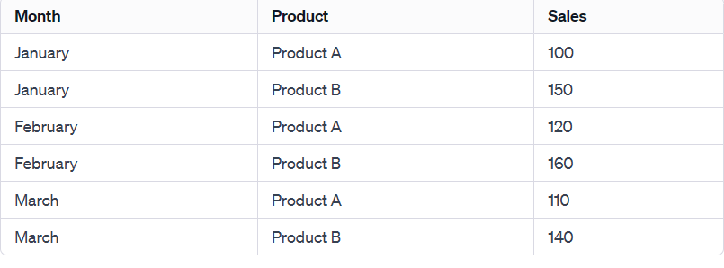
Here there are multiple rows if you want to see the amount of sales in a particular month , or for a particular product. It is not very conducive for comparisons.
Wide format: There are less rows and more columns.
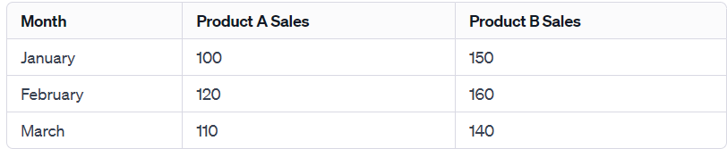
Here there are lesser rows (usually there are more rows but in this case it worked out to still being 3 columns). And it is clearer as to how much sales there is per product per month.
How it’s used:
wide_data <- long_data %>% pivot_wider(names_from = Product, values_from = Sales)
names_from: is the argument where you specify the column that will be used to create columns in the wide format
values_from: specifies the column containing the values that will be used to file the new wide format columns
mutate()
mutate() is used to execute operations on existing columns and transform them, create new columns, or transform/create data using conditional statements.
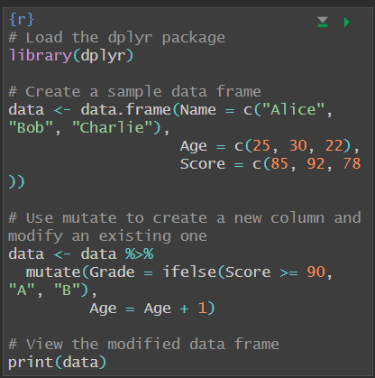
Here we see that we create a new column called Grade and if the score is greater than 90, we populate it with A , if not B. We then process existing data by increasing age by 1.
filter()
This method is used to filter rows based on a condition. Here is how it is used:
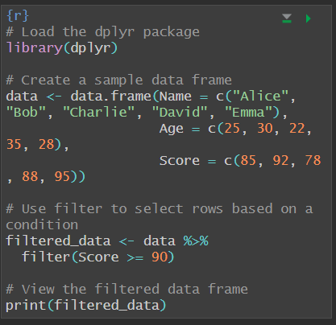
Here we filter the rows and include rows in the data frame ONLY if the score was equal to or greater than 90.
select()
This is like the select query in sql, and you use this to select columns you are interested in.
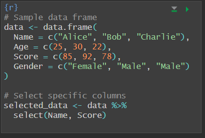
group_by()
Here you group the data into groups due to a column, like gender for instance. You can then do group wide operations.
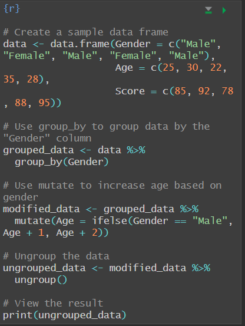
Data Wrangling
Now this is the code we are supposed to run to prepare the data. Before we prepare the data let’s take a step back.
Our purpose here is to build a choropleth map that shows you the distribution of the dependency variable across the country/ per region. The dependency variable is calculated like so: DEPENDENCY = (YOUNG + AGED) /`ECONOMY ACTIVE. Thus, we need to know the number of people who are young, aged and economy active in each region. Hence, we have to make sure we make rows that tell us these values per region - that requires group by the two values PA and SZ. We can also group_by AG first so we can see the number of people per age group in each location.
I have added the explanation for each line of code above that code.
popdata2020 <- popdata %>%
filter(Time == 2020) %>%
group_by(PA, SZ, AG) %>%
summarise(`POP` = sum(`Pop`)) %>%
ungroup()%>%
pivot_wider(names_from=AG,
values_from=POP) %>%
mutate(YOUNG = rowSums(.[3:6])
+rowSums(.[12])) %>%
mutate(`ECONOMY ACTIVE` = rowSums(.[7:11])+
rowSums(.[13:15]))%>%
mutate(`AGED`=rowSums(.[16:21])) %>%
mutate(`TOTAL`=rowSums(.[3:21])) %>%
mutate(`DEPENDENCY` = (`YOUNG` + `AGED`)
/`ECONOMY ACTIVE`) %>%
# we then just want to display columns that are these
select(`PA`, `SZ`, `YOUNG`,
`ECONOMY ACTIVE`, `AGED`,
`TOTAL`, `DEPENDENCY`)Code walkthrough
filter(Time == 2020) %>%Here, we are only selecting the rows that have the value 2020 under the
timecategory.Here’s a sample data set to help you understand.
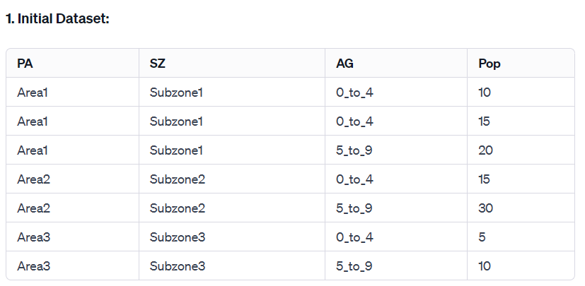
group_by(PA, SZ, AG) %>%- In group by, we make different groups, each with a unique combination of PA, SZ, and AG. Any row in the dataset that matches that group’s combination of PA, SZ, and AG will be in that group. Hence, each group will have different number of rows. All of the columns of the row will still be there when just executing a
group_by(). When grouping, we can do group wide operations, instead of data wide.
- In group by, we make different groups, each with a unique combination of PA, SZ, and AG. Any row in the dataset that matches that group’s combination of PA, SZ, and AG will be in that group. Hence, each group will have different number of rows. All of the columns of the row will still be there when just executing a
summarise(POP = sum(Pop)) %>%We now have the data in groups, with each group having different number of rows.
We then add up all the population figures of all the rows in each group and store them in a new column called pop. Now, since the population values in all rows in each group are added together, we have one row per group. Each group has its own combination of pa, sz and ag and its aggragated total summary for population. All the other columns like sex and tod are discarded. You chose to add the population values of all rows together, and did not mention what to do with the other rows, hence they are discarded!
In the picture below, you can see that the number of rows have decreased as there were some groups with more than 1 row, and when the population values were added, they were summarised into a row.
We now know the number of people per age group per region. This is vital because we have different categories such as
young,agedandeconomy activethat we need to compute. Eachyoung,agedandeconomy activecategory would consitute of different age categories. Having various different age categories allows us to pick and choose the varying age categories we want to compute to find out the population for each of theyoung,agedandeconomy activecategories for each region.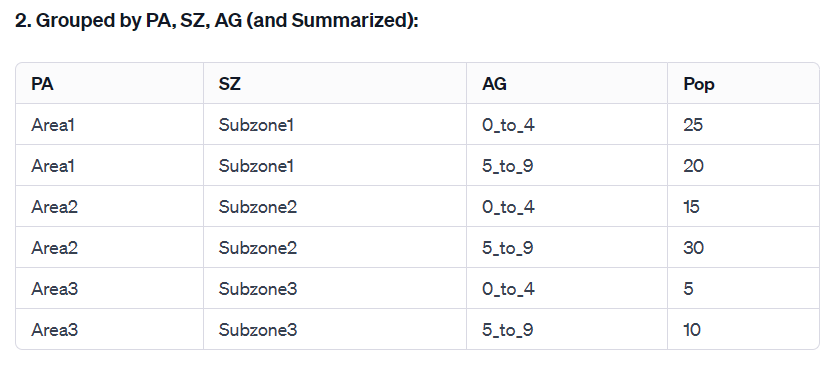
pivot_wider(names_from=AG, values_from=POP) %>%To make it easier to compute the population values for each
young,agedandeconomy activecategory per region, we should make the age categories column names. Then, we can make the population the values under each age category. As illustrated below, we can easily see the number of people per age category per region.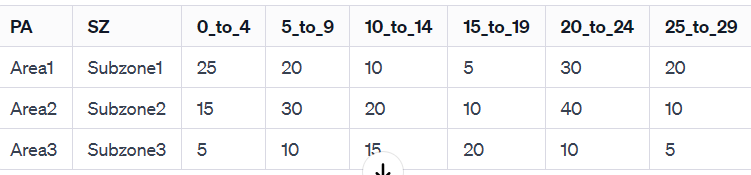
mutate(YOUNG = rowSums(.[3:6]) +rowSums(.[12])) %>%As we said before, there are different age categories , like 0-4 being one column 5-9 being another column. Hence, we add up populations under columns 3 to 6 in each row as that is the age range that we think is young. After calculating that for each row, we create a column called young and populate it.
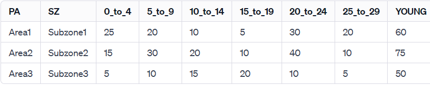
mutate(ECONOMY ACTIVE = rowSums(.[7:11])+ rowSums(.[13:15]))%>%- next we want to find out what is the total number of pople in each subzone that are economically active. so we want to add up the values under age range categories that we think are eco active in each row and then make a eco active column and populate it underneath that
mutate(AGED=rowSums(.[16:21])) %>%- Do the same thing for total number of people for each subzone
mutate(TOTAL=rowSums(.[3:21])) %>%- Do the same thing for total number of people for each subzone
mutate(DEPENDENCY = (YOUNG + AGED) /ECONOMY ACTIVE) %>%- we then calculate the dependency
select(PA, SZ, YOUNG, ECONOMY ACTIVE, AGED, TOTAL, DEPENDENCY)- we then just select the columns we want
Joining attribute and geographical data
The values in PA and SZ are made up of lower and upper case so lets make them all uppercase
popdata2020 <- popdata2020 %>%
mutate_at(.vars = vars(PA, SZ),
.funs = list(toupper)) %>%
filter(`ECONOMY ACTIVE` > 0)Now let’s join them based on one common column that is SZ - it is present in both the geospatial and attribute data.
mpsz_pop2020 <- left_join(mpsz, popdata2020,
by = c("SUBZONE_N" = "SZ"))Let’s write it into a file. Remember to create the directory and file data/rds/mpszpop2020.rds before executing this.
write_rds(mpsz_pop2020, "data/rds/mpszpop2020.rds")Choropleth Mapping Geospatial Data using tmap
You can do this two ways
- Plotting a thematic map quickly by using qtm()
- Plotting highly customisable thematic map by using tmap elements
Using qtm()
When we say fill = “DEPENDENCY”, we mean that the colors of the choropleth map would vary based on the values of dependency.
This method is quick but reduces the scope for customization.
tmap_mode("plot")
qtm(mpsz_pop2020,
fill = "DEPENDENCY")
Using tmap()
We can start of with learning about using tm_shape() and tm_fill().
We are showing a geographical distribution of dependency.
tm_shape(mpsz_pop2020)+
tm_fill("DEPENDENCY")
If we wanted to customise more, and use tm_borders,
tm_shape(mpsz_pop2020)+
tm_fill("DEPENDENCY") +
tm_borders(lwd = 0.1, alpha = 1)
If we wanted ultimate customisation, these are the functions and arguments available.
style= quantile shows that we use quantile to classify the data and come up with categories/classes. This means there are four categories with the number of data points each category being equal.
The palette=blues is the theme of the map.
The layout method often focuses on the aesthetics of the map and is quite self explanatory.
tm_compass() adds a compass to the map.
tm_scale_bar() adds the scale to show the relationship between the real measurements to the measurements on the screen.
tm_grid() adds grid lines to show longitutde and latitude.
tm_shape(mpsz_pop2020)+
tm_fill("DEPENDENCY",
style = "quantile",
palette = "Blues",
title = "Dependency ratio") +
tm_layout(main.title = "Distribution of Dependency Ratio by planning subzone",
main.title.position = "center",
main.title.size = 1.2,
legend.height = 0.45,
legend.width = 0.35,
frame = TRUE) +
tm_borders(alpha = 0.5) +
tm_compass(type="8star", size = 2) +
tm_scale_bar() +
tm_grid(alpha =0.2) +
tm_credits("Source: Planning Sub-zone boundary from Urban Redevelopment Authorithy (URA)\n and Population data from Department of Statistics DOS",
position = c("left", "bottom"))
Here we have used tmap and used tm_shape() + tm_fill(). tm_fill() automatically draws out polygons in your map and fills them with the color necessiated by its relevant value.
Let’s say you wanted to draw other shapes in your map other than polygons. You could do that with tm_lines() or tm_raster()
But let’s say we wanted to say outright that we wanted to draw out polygons. We can use tm_polygons()
Using tm_polygons()
tm_shape(mpsz_pop2020) +
tm_polygons()
Remember: we have to do tm_shape first to load our data in.
If we wanted to also say what variable we wanted to show a geographical distribution of :
tm_shape(mpsz_pop2020)+
tm_polygons("DEPENDENCY")
Drawing a choropleth map using tm_fill() and *tm_border()*
Written right underneath the tmap section for better flow.
Data classification methods of tmap
There are different ways to classify data into categories.
Plotting choropleth maps with built-in classification methods
Here we are using jenks, which means it looks for natural clusters in the data and then groups them together. And we are looking to divide the data into 5 natural clusters.
tm_shape(mpsz_pop2020)+
tm_fill("DEPENDENCY",
n = 5,
style = "jenks") +
tm_borders(alpha = 0.5)
We can also use equal, where the interval in data values is equal. But this will not be good when the data is skewed in one direction as there might not be any data points in many of the intervals.
tm_shape(mpsz_pop2020)+
tm_fill("DEPENDENCY",
n = 5,
style = "equal") +
tm_borders(alpha = 0.5)
DIY (1)
DIY: Using what you had learned, prepare choropleth maps by using different classification methods supported by tmap and compare their differences.
Let’s try sd:
tm_shape(mpsz_pop2020)+
tm_fill("DEPENDENCY",
n = 5,
style = "sd") +
tm_borders(alpha = 0.5)
Let’s try quantile:
tm_shape(mpsz_pop2020)+
tm_fill("DEPENDENCY",
n = 5,
style = "quantile") +
tm_borders(alpha = 0.5)
I can see that quantile shows more of a geographic distribution. sd shows a lesser range- perhaps the sd was too huge. Hence, there were large number of data points per category and consequently, the number of categories was also less - showing less of a range.
DIY (2)
DIY: Preparing choropleth maps by using similar classification method but with different numbers of classes (i.e. 2, 6, 10, 20). Compare the output maps, what observation can you draw?
Let’s try quantile.
Let’s start with 6 classes.
tm_shape(mpsz_pop2020)+
tm_fill("DEPENDENCY",
n = 6,
style = "quantile") +
tm_borders(alpha = 0.5)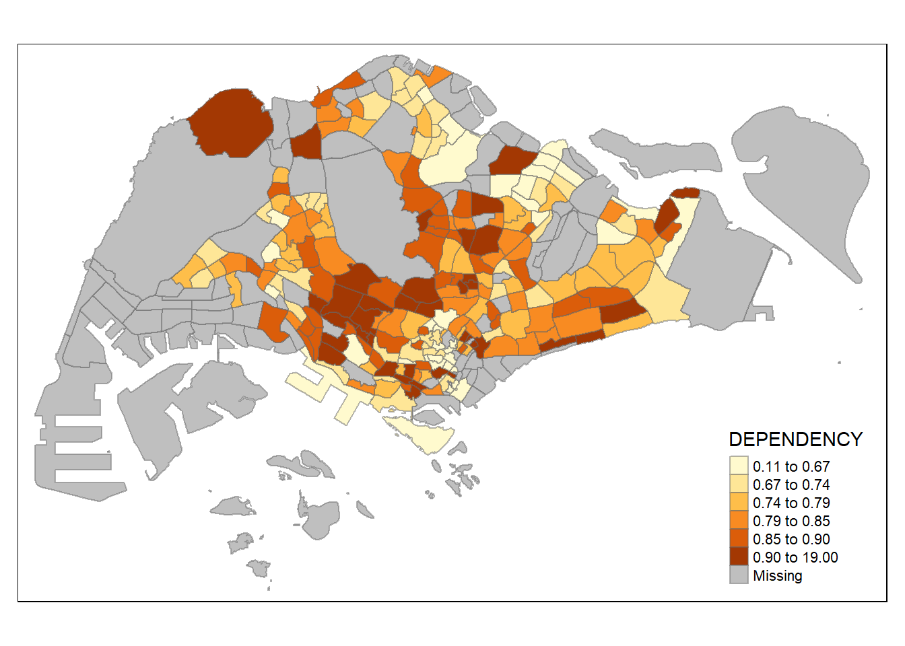
Let’s start with 6 classes.
tm_shape(mpsz_pop2020)+
tm_fill("DEPENDENCY",
n = 7,
style = "quantile") +
tm_borders(alpha = 0.5)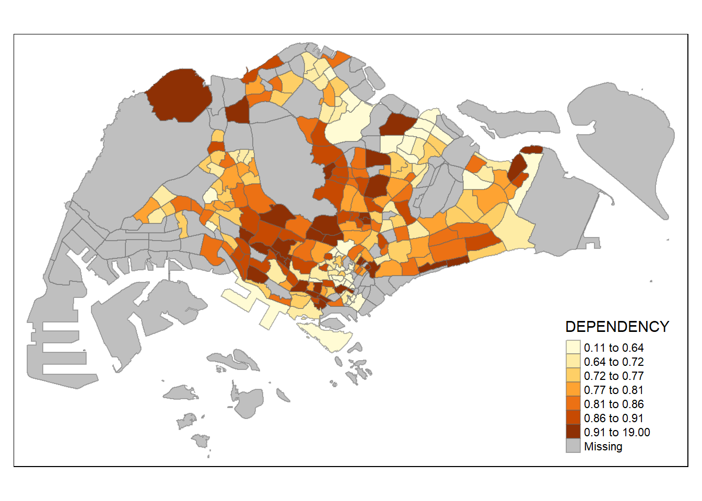
We can see the map when the classes are 5,6 and 7. As it increases from 5 to 6, we get a greater nuance in the geographic distribution of the dependency column. However, when we go from 6 to 7, there is not much of an increase in nuance. The difference in category boundaries are very minimal. Hence, the ideal number of classes would be 6.
Plotting choropleth maps with custom breaks
In the methods we used before, the breakpoints were set automatically by them. If we wanted to define the boundaries of each category ourselves, we can do that too. However, to do that, we need more information about the data to understand it. Getting the data’s mean/quantile values, minimum, median, can help with setting those boundaries.
So let’s get those values through the use of this method.
summary(mpsz_pop2020$DEPENDENCY) Min. 1st Qu. Median Mean 3rd Qu. Max. NA's
0.1111 0.7147 0.7866 0.8585 0.8763 19.0000 92 Now let’s choose our breakpoints and plot the choropleth map.
Our breakpoints are at 0, 0.6. 0.7, 0., 0.9, 1.00.
tm_shape(mpsz_pop2020)+
tm_fill("DEPENDENCY",
breaks = c(0, 0.60, 0.70, 0.80, 0.90, 1.00)) +
tm_borders(alpha = 0.5)
Color Scheme
Now on to the fun part! We get to delve into the color scheme of things
Using ColourBrewer palette
Let’s try the blue palette.
tm_shape(mpsz_pop2020)+
tm_fill("DEPENDENCY",
n = 6,
style = "quantile",
palette = "Blues") +
tm_borders(alpha = 0.5)
Let’s try the green palette.
tm_shape(mpsz_pop2020)+
tm_fill("DEPENDENCY",
style = "quantile",
palette = "-Greens") +
tm_borders(alpha = 0.5)
Map Layouts
When we talk about map layouts, we want to control how a map looks. We want to ensure that all aspects of a map are present. This includes the title, the scale bar, the compass, legend, margins and aspect ratios. We also can control the style of the map.
Map Style
This refers to tmap_style(), not the style argument in your tm_fill where you declare the type of data classification you choose to employ.
It controls how your map would look like. These are the arguments you could use:
The available styles are: "white", "gray", "natural", "cobalt", "col_blind", "albatross", "beaver", "bw", "classic", "watercolor" If we were to use classic:
tm_shape(mpsz_pop2020)+
tm_fill("DEPENDENCY",
style = "quantile",
palette = "-Greens") +
tm_borders(alpha = 0.5) +
tmap_style("classic")
If we used dark,
tm_shape(mpsz_pop2020)+
tm_fill("DEPENDENCY",
style = "quantile",
palette = "-Greens") +
tm_borders(alpha = 0.5) +
tmap_style("cobalt")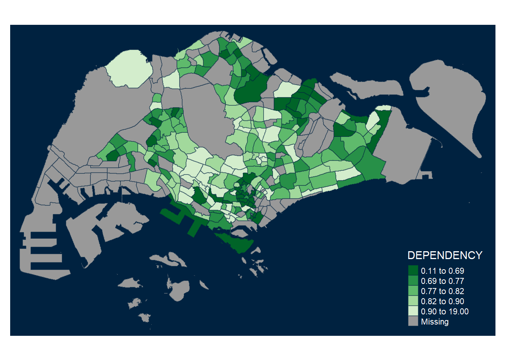
Map Legend
Let’s try adding the legend first.
tm_shape(mpsz_pop2020)+
tm_fill("DEPENDENCY",
style = "jenks",
palette = "Blues",
legend.hist = TRUE,
legend.is.portrait = TRUE,
legend.hist.z = 0.1) +
tm_layout(main.title = "Distribution of Dependency Ratio by planning subzone \n(Jenks classification)",
main.title.position = "center",
main.title.size = 1,
legend.height = 0.45,
legend.width = 0.35,
legend.outside = FALSE,
legend.position = c("right", "bottom"),
frame = FALSE) +
tm_borders(alpha = 0.5)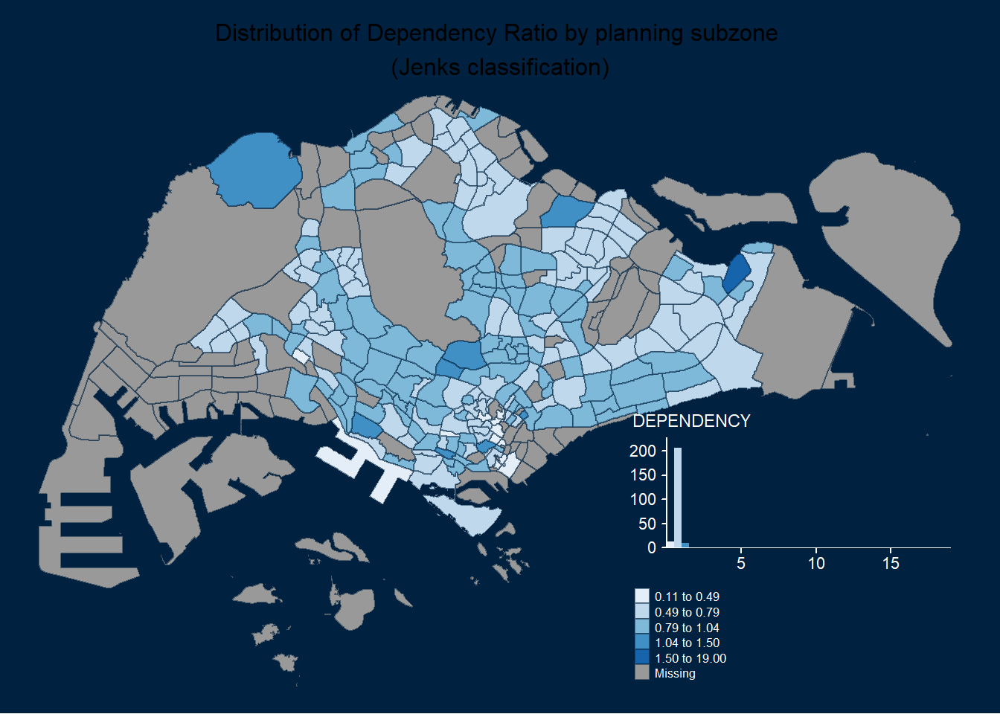
Let’s go through what the legend part of the code means.
legend.hist= TRUE means that we are going to include a histogram like legend. This will allow the viewer to see the distribution of values in the form of a histogram as well.
legend.is.portrait = TRUE means that the legend/histogram will be in portrait orientation.
legend.hist.z=0.1 means the legend will be slightly behind the map.
Cartographic furniture
This refers to adding of the compass, scale bar and grid lines that we talked about earlier.
tm_shape(mpsz_pop2020)+
tm_fill("DEPENDENCY",
style = "quantile",
palette = "Blues",
title = "No. of persons") +
tm_layout(main.title = "Distribution of Dependency Ratio \nby planning subzone",
main.title.position = "center",
main.title.size = 1.2,
legend.height = 0.45,
legend.width = 0.35,
frame = TRUE) +
tm_borders(alpha = 0.5) +
tm_compass(type="8star", size = 2) +
tm_scale_bar(width = 0.15) +
tm_grid(lwd = 0.1, alpha = 0.2) +
tm_credits("Source: Planning Sub-zone boundary from Urban Redevelopment Authorithy (URA)\n and Population data from Department of Statistics DOS",
position = c("left", "bottom"))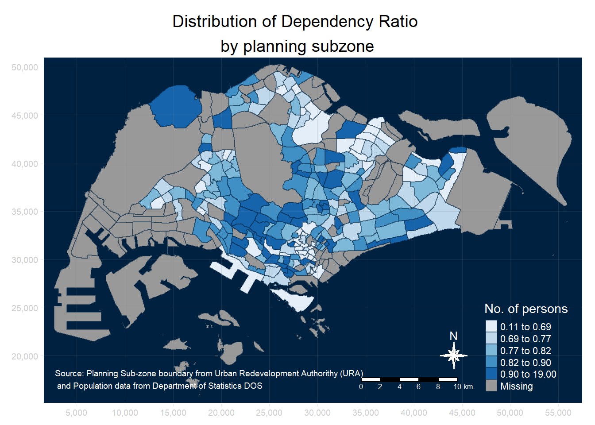
Drawing Small Multiple Choropleth Maps
Small multiple maps, also referred to as facet maps, are composed of many maps arranged side-by-side or vertically. Small multiple maps enable the visualisation of how spatial relationships change with respect to another variable, such as time.
In tmap, small multiple maps can be plotted in three ways:
by assigning multiple values to at least one of the asthetic arguments,
by defining a group-by variable in tm_facets(), and
by creating multiple stand-alone maps with tmap_arrange().
By assigning multiple values to at least one of the aesthetic arguments
Here you want both to have the data classification of equal.
tm_shape(mpsz_pop2020)+
tm_fill(c("YOUNG", "AGED"),
style = "equal",
palette = "Blues") +
tm_layout(legend.position = c("right", "bottom")) +
tm_borders(alpha = 0.5) +
tmap_style("white")
Now, you want each of them to have different data classifications, and different looks.
tm_shape(mpsz_pop2020)+
tm_polygons(c("DEPENDENCY","AGED"),
style = c("equal", "quantile"),
palette = list("Blues","Greens")) +
tm_layout(legend.position = c("right", "bottom"))
In these two sets of graphs (4), the two maps in each set are showcasing different variables across Singapore . In the first set, we show the distribution of young and then the distribution of old.
Now what if we wanted the maps to be linked to each other, as in, show the distribution of the same variable?
By defining a group-by variable in tm_facets()
tm_shape(mpsz_pop2020) +
tm_fill("DEPENDENCY",
style = "quantile",
palette = "Blues",
thres.poly = 0) +
tm_facets(by="REGION_N",
free.coords=TRUE,
drop.shapes=TRUE) +
tm_layout(legend.show = FALSE,
title.position = c("center", "center"),
title.size = 20) +
tm_borders(alpha = 0.5)
Here, we show the distribution of the same dependency variable across multiple regions.
By creating multiple stand-alone maps with tmap_arrange()
youngmap <- tm_shape(mpsz_pop2020)+
tm_polygons("YOUNG",
style = "quantile",
palette = "Blues")
agedmap <- tm_shape(mpsz_pop2020)+
tm_polygons("AGED",
style = "quantile",
palette = "Blues")
tmap_arrange(youngmap, agedmap, asp=1, ncol=2)
Mappping Spatial Object Meeting a Selection Criterion
Instead of creating small multiple choropleth map, you can also use selection funtion to map spatial objects meeting the selection criterion.
tm_shape(mpsz_pop2020[mpsz_pop2020$REGION_N=="CENTRAL REGION", ])+
tm_fill("DEPENDENCY",
style = "quantile",
palette = "Blues",
legend.hist = TRUE,
legend.is.portrait = TRUE,
legend.hist.z = 0.1) +
tm_layout(legend.outside = TRUE,
legend.height = 0.45,
legend.width = 5.0,
legend.position = c("right", "bottom"),
frame = FALSE) +
tm_borders(alpha = 0.5)